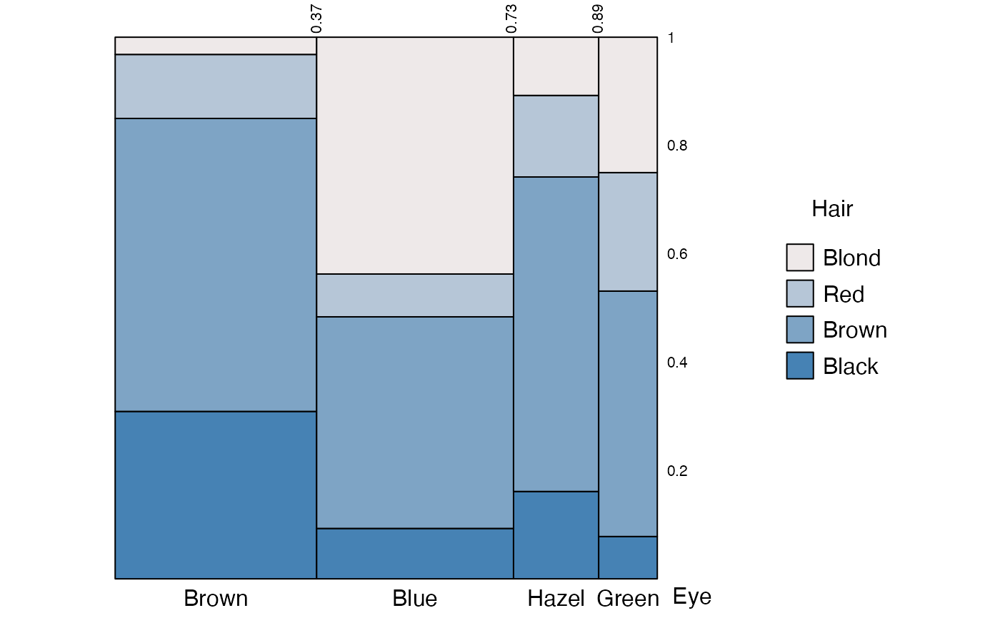
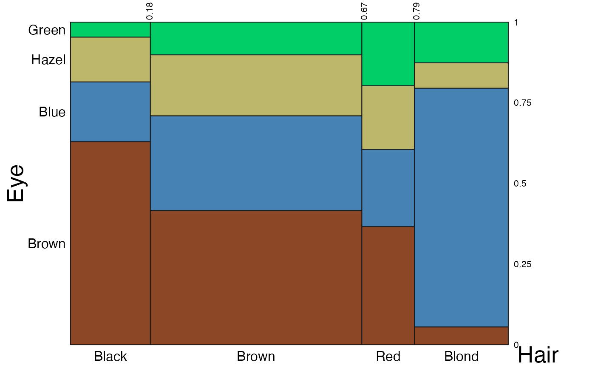
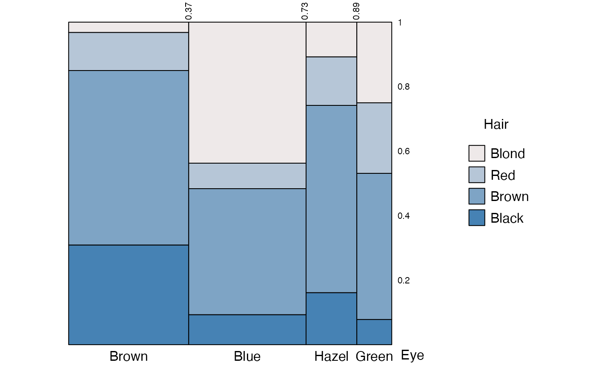
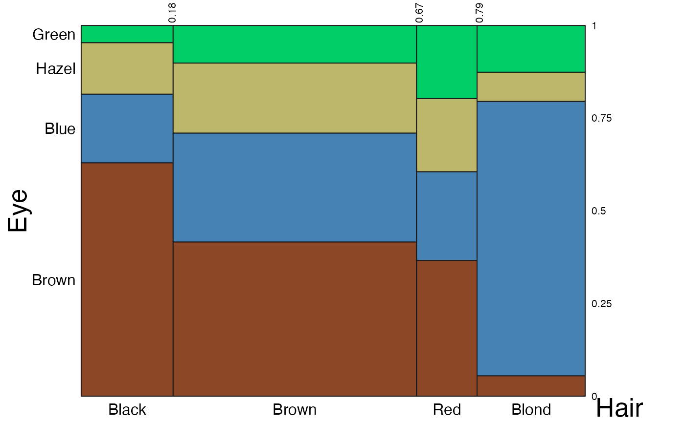

Return a grid graphic object (grob) and draw an eikosogram if draw = TRUE.
# Default S3 method
eikos(
y,
x = NULL,
data = NULL,
marginalize = NULL,
main = "",
main_size = 16,
ylabs = TRUE,
ylab_rot = 0,
yname_size = 12,
yvals_size = 12,
yaxs = TRUE,
yprobs = NULL,
yprobs_size = 8,
xlabs = TRUE,
xlab_rot = 0,
xname_size = 12,
xvals_size = 12,
xaxs = TRUE,
xprobs = NULL,
xprobs_size = 8,
vertical_xprobs = TRUE,
ispace = list(bottom = 8, left = 2, top = 2, right = 5),
legend = FALSE,
col = NULL,
bottomcol = "steelblue",
topcol = "snow2",
lcol = "black",
draw = TRUE,
newpage = TRUE,
lock_aspect = TRUE
)Arguments
- y
Either the name of a variable in the data set (eikos.default), or a formula of such variables (eikos.formula).
- x
name(s) of any conditional variable(s) (horizontal axis). Should be null if formula given.
- data
data frame or table
- marginalize
variable(s) to marginalize on, or NULL if none. Marginalized variables still appear in plot.
- main
title of plot
- main_size
font size of title (in points)
- ylabs
logical, whether y labels should appear or not.
- ylab_rot
rotation of y labels
- yname_size
font size of vertical axis names (in points)
- yvals_size
font size of labels for values of y variable (in points)
- yaxs
logical, whether y axis should appear or not.
- yprobs
probabilities to be shown on y-axis. NULL if they should be calculated from the data.
- yprobs_size
font size of labels for horizontal probabilities (in points)
- xlabs
logical, whether x labels should appear or not.
- xlab_rot
rotation of x labels
- xname_size
font size of horizontal axis names (in points)
- xvals_size
font size of labels for values of x variables (in points)
- xaxs
logical, whether x axis should appear or not.
- xprobs
probabilities to be shown on x-axis. NULL if they should be calculated from the data.
- xprobs_size
font size of labels for horizontal probabilities (in points)
- vertical_xprobs
logical, whether probabilities on x axis should be rotated vertically.
- ispace
list of four items (bottom, left, top, right) indicating the margins separating the text around the diagram. Each value is a positive integer giving a measure in "points".
- legend
logical, whether to include legend
- col
a vector of colours to match the response values. If NULL (the default), the colours are constructed as a smooth transition from `bottomcol` to `topcol` via `grDevices::colorRampPalette
- bottomcol
bottom colour
- topcol
top colour
- lcol
colour of lines
- draw
logical, whether to draw eikosogram.
- newpage
logical, whether to draw on a newpage.
- lock_aspect
logical, whether to force entire plot to 1:1 aspect ratio.
Examples
eikos("Hair", "Eye", data=HairEyeColor, legend = TRUE)
 eikos("Hair", "Eye", data=HairEyeColor,
legend = TRUE, ylabs = FALSE,
yname_size = 16, yvals_size = 8)
eikos("Hair", "Eye", data=HairEyeColor,
legend = TRUE, ylabs = FALSE,
yprobs = seq(0.2, 1, .2))

eikos("Eye", "Hair", data=HairEyeColor, yprobs = seq(0,1,0.25),
yname_size = 20, xname_size = 20,
col = c("sienna4", "steelblue", "darkkhaki", "springgreen3"),
lcol = "grey10",
lock_aspect = FALSE)

eikos("Hair", "Eye", data=HairEyeColor,
legend = TRUE, ylabs = FALSE,
yname_size = 16, yvals_size = 8)
eikos("Hair", "Eye", data=HairEyeColor,
legend = TRUE, ylabs = FALSE,
yprobs = seq(0.2, 1, .2))

eikos("Eye", "Hair", data=HairEyeColor, yprobs = seq(0,1,0.25),
yname_size = 20, xname_size = 20,
col = c("sienna4", "steelblue", "darkkhaki", "springgreen3"),
lcol = "grey10",
lock_aspect = FALSE)
